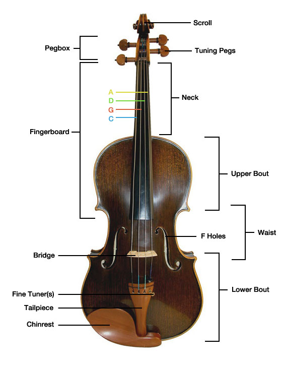

The Viola
The viola is a string instrument (part of the family with violins, celli, and basses) that has been in existence since the early 16th Century. Violas are made of wood, with metal strings.It is has four strings that are tuned in perfect fifths (C3, G3, D4, A4). The viola is most commonly played with a bow, but it sometimes plucked (pizzicato). The viola gives a miuch richer, deeper sound compared to the violin. In orchestras, the viola usually sits on the inside, between the second violins and celli. Because of its deeper register, the viola's neck realistically should be much longer (around 22 inches). Unfortunately, most people's arms are not that long, meaning that the viola has a shorter neck in proportion to its size compared with the violin. This results in the viola not being able to reach its full potential in tone.
Jokes
What do violinists call violists?
Violators.